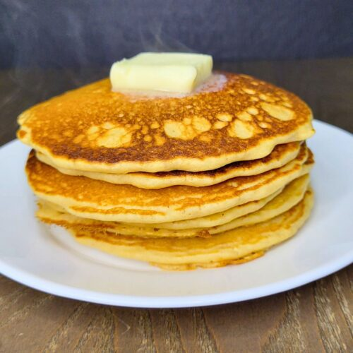

Pancakes

Description
Delicious fluffy homemade pancakes. These pancakes are incredibly simple and fast to make and go great with any kind of toppings.
Ingredients
- 3 cups flour
- 1/2 cups milk
- 3 eggs
- 1 1/2 teaspoons baking powder
- 1 1/2 teaspoons vanilla extract
- As much butter as it takes to cook
Steps
- In a mixing bowl, mix together all ingredients. When mixing the batter, make sure not to over-mix. It is better to have lumps than to
over mix the batter.
- Heat a skillet over medium-low heat with enough butter to cover the bottom of the pan.
- Ladel one ladelsworth of pancake batter into the skillet at a time. Allow to cook until the mixture begins to bubble. Then, flip it and cook on
the other side, regularly checking to see if it has browned. Remove once both sides are lightly browned.
- Repeat for the full mixture, making sure to add more butter if the pan is dry.
Home